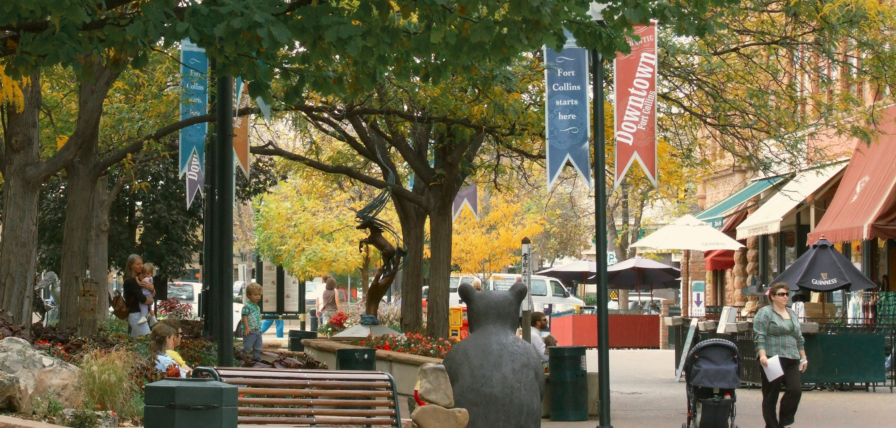
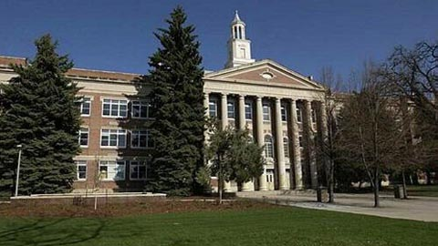
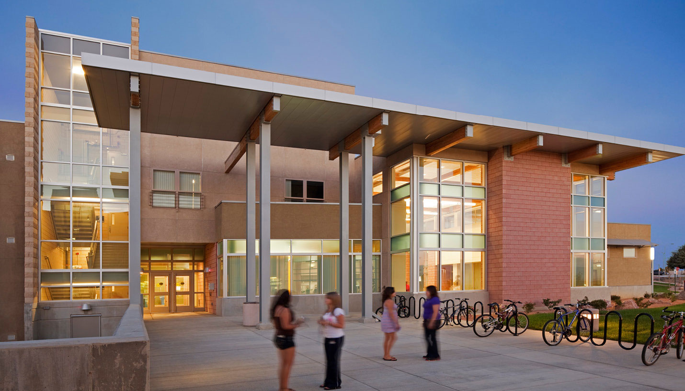

英文名称 Colorado State University 学校网站 www.colostate.edu 学校简介 美国科罗拉多州立大学 （Colorado State University）于1870年建校，1957 年始定名为科罗…
英文名称 Colorado State University
学校网站 www.colostate.edu
学校简介
美国科罗拉多州立大学（Colorado State University）于1870年建校，1957 年始定名为科罗拉多州立大学，占地5,000英亩。2016年USNEWS排名第127位。科罗拉多州立大学是美国著名的公立大学之一，拥有先进的教学与研究设施以及雄厚的师资力量，其在传染病学、气象学、清洁能源技术和环境科学领域占全美领先地位。关于大气，航空航天的研究让科罗拉多州立大学的大气科学专业排名全美第一。并且在大气雷达探测方面的研究使得人类对气候变化，天气预报的研究得到了很大的发展。用于研究性质的CSU-CHILL雷达是国家雷达设备，由美国国家自然科学基金赞助，科罗拉多州立大学（电子工程系）管理。主要用于雷达，遥感方面的研究。也是世界上该领域用于研究的最先进的雷达设备。科罗拉多州立大学拥有8个学院（Academic Schools）、共向学生提供55个学科院系的课程。

地理位置
科罗拉多州立大学(Colorado State University)位于科罗拉多州科林斯堡（Fort Collins,CO），地处洛矶山麓，风景怡人，学校距离丹佛市 65里。科林斯堡的许多文化活动以科罗拉多州立大学的学生为中心。由于当地许多居民是年龄与大学生相当，因此市内有非常活跃的音乐活动中心，许多获得赞赏的小型啤酒厂也在这里。市中心有一个老城购物区，每年举办多种大型庆祝会。林肯中心是科林斯堡交响乐团的驻地，百老汇的巡回演出也经常到这里。科林斯堡气球节吸引世界各地的热气球爱好者参加。市内的啤酒文化也很发达。除从1984年开始在市内营业的安海斯-布希啤酒厂外还有三个微型啤酒厂。市内还有一些啤酒店。六月末市内举办科罗拉多啤酒节。这个节日在老城举办，参加的有来自科罗拉多州45个以上的啤酒厂和平均近三万人。科林斯堡最主要的演出场地是林肯中心，这个中心是1978年建造的，拥有一座1180席的大厅和一个220席的小厅以及四个展览厅、一个室外雕塑和表演场。当地许多艺术组织将其总部设立在设立，包括科林斯堡交响乐团、科林斯堡歌剧团等。中心拥有便利残废人的轮椅的出入口以及辅助听力有缺陷的人的红外声响系统。每年这里举办近1750次活动。

专业课程设置
本科
文学(16个)
艺术史、英语、西班牙语、音乐、艺术、戏剧、舞蹈、室内设计、言语交际、工作室艺术、传播学、媒体研究、人文科学、表演艺术、语言、文学与文化、新闻学与技术传媒
农学(14个)
农业经济学、动物学、动物科学、林学、农商管理、园艺学、围林建筑、马科动物科学、农业教育、环境园艺学、植物健康、鱼类、野生动物与生态保护、牧场生态学、作物和土壤科学
历史学(3个)
艺术史、历史、种族研究
理学(18个)
化学、数学、物理、心理学、地质学、生物化学、自然科学、生物医学、微生物学、化学与生物工程、环境卫生、生物科学、自然资源管理、流域科学、植物健康、化学、生物、生物医学工程、鱼类、野生动物与生态保护、自然资源休闲和旅游
经济学(2个)
经济学、农业经济学
教育学(2个)
健康与运动科学、农业教育
管理学(7个)
施工管理、酒店管理、农商管理、工商管理、家庭与消费科学、自然资源管理、服装与推销
工学(15个)
土木工程、计算机工程、环境工程、机械工程、化学与生物工程、电气工程、工程科学、环境卫生、室内设计、计算机科学、服装与推销、应用计箅机技术、电子与生物医学-镭射与光学、机械与生物医学工程、电子与生物医学-电学
哲学(1个)
哲学
医学(3个)
营养学、生物医学、营养与食品科学
法学(7个)
国际研究、人类学、社会学、人类发展与家庭研究、政治科学、社会工作、家庭与消费科学
文学(7个)
英语文学硕士、创意写作（艺术硕士）、音乐硕士、文学艺术硕士、传播学文学硕士、语言、文学与文化文学硕士、设计与广告营销理学硕士
农学(13个)
园林建筑学硕士、农业与资源经济学、自然资源管理员硕士、生物农业科学理学硕士、萆地生态系统科学理学硕士、农业科学农学硕士、动物学理学硕士、植物学理学硕士、鱼类、野生动物与生态保护理学硕士、森林科学理学硕士、园艺学理学硕士、作物和土壤科学理学硕士、动物学理学硕士
历史学(2个)
历史学文学硕士、种族研究文学硕士
理学(20个)
生物农业科学理学硕士、萆地生态系统科学理学硕士、分子、细胞与综合神经科学、自然资源专业硕士、大气科学理学硕士、生物化学理学硕士、生物医学理学硕士、细胞与分子生物学理学硕士、生态学理学硕士、环境卫生理学硕士、鱼类、野生动物与生态保护理学硕士、食品科学与营养学理学硕士、地球科学理学硕士、人文因素-自然资源理学硕士、数学理学硕士、微生物学理学硕士、物理学理学硕士、心理学理学硕士、统计学理学硕士、流域科学理学硕士
经济学(3个)
农业与资源经济学、应用统计学硕士、经济学文学硕士
教育学(5个)
教育和人力资源研究教育学硕士、管理实践硕士、自然科学教育硕士、健康与运动科学理学硕士、高等教育理学硕士
管理学(9个)
工商管理硕士、旅游管理硕士、教育和人力资源研究教育学硕士、自然资源管理员硕士、保护领袖理学硕士、领导与管理文学硕士、工商管理理学硕士、设计与广告营销理学硕士、施工管理理学硕士
工学(9个)
大众传播与技术理学硕士、计算机科学硕士/计箅机科学理学硕士、生物工程理学硕士、化学工程理学硕士、土木工程理学硕士、环境卫生理学硕士、电气工程理学硕士、机械工程理学硕士、系统工程理学硕士
哲学(1个)
这学文学硕士
医学(6个)
公共卫生硕士、放射性健康科学理学硕士、职业疗法硕士/职业疗法理学硕士、生物医学理学硕士、临床科学理学硕士、食品科学与营养学理学硕士
法学(5个)
人类学文学硕士、社会工作硕士 、政诒科学文学硕士 、社会学文学硕士 、人类发展与家庭研究理学硕士
农学(10个)
囤艺博士、植物学博士、动物学博士、生物农业科学博士、萆地生态系统科学博士、农业与资源经济学博士、动物学博士、鱼类、野生动物与生态保护博士、森林科学博士、作物与土壤科学博士
理学(20个)
生物化学博士、化学博士、地球科学博士、数学博士、物理学博士、心理学博士、环境卫生博士、微生物学博士、统计学博士、生物农业科学博士、萆地生态系统科学博士、大气科学博士、生物医学博士、细胞与分子生物学博士、生态学博士、鱼类、野生动物与生态保护博士、生物能童学博士、自然资源博士、食品科学与营养学博士、分子、细胞与综合神经科学博士
经济学(2个)
经济学博士、农业与资源经济学博士
教育学(1个)
教育和人类资源研究博士
管理学(1个)
教育和人类资源研究博士
工学(9个)
机械工程学博士、土木工程博士、计算机科学博士、化学工程博士、环境卫生博士、大众传播与技术博士、生物工程博士、电气工程博士、系统工程博士
医学(6个)
临床科学博士、病理学博士、放射性健康科学博士、生物医学博士、食品科学与营养学博士、职业与康复科学博士
法学(3个)
社会学博士、社会工作者博士、政治科学博士
管理学(2个)
工商管理硕士、工商管理硕士-全球社会与可持续发展企业
农学(1个)
兽医学预备课程
教育学(4个)
法学预备课程、健康学预备课程、兽医学预备课程、工商管理预备课程
管理学(1个)
工商管理预备课程
医学(1个)
健康学预备课程
法学(1个)
法学预备课程

入学要求
本科：托福 60-80 雅思 5.5-6.5 GPA 3.0
研究生：托福 65-80 雅思 5.5-6.5 GPA 3.0

学费情况
学费：$24266 - $26066/年
生活费：$10000- $12000/年
总费用：$40,000左右/年

本文由 辽宁留学服务有限公司 编辑发布，内容仅供留学规划参考，未经授权请勿转载。
政策法规、招生简章与项目费用等信息具有时效性，请以各国官方机构及院校最新发布为准；如需核实详情，请联系顾问。